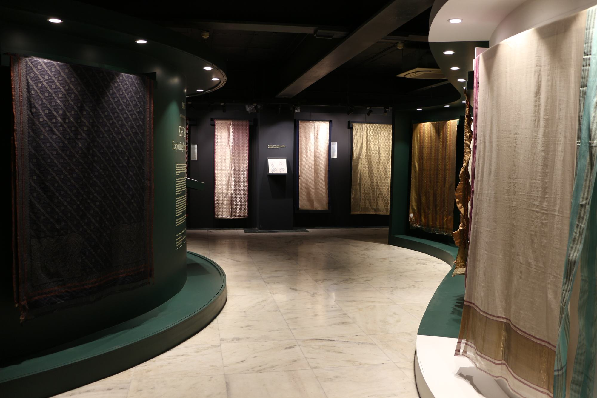
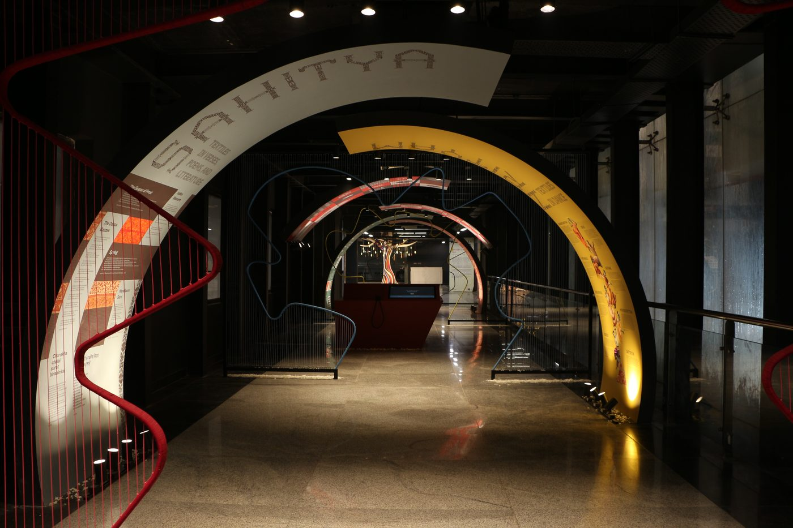
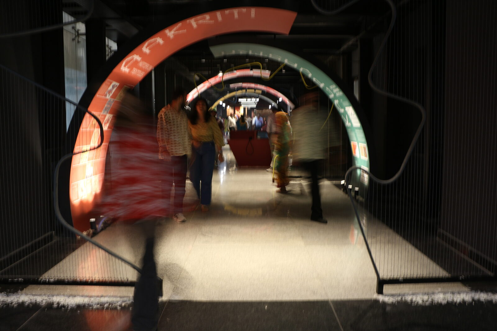
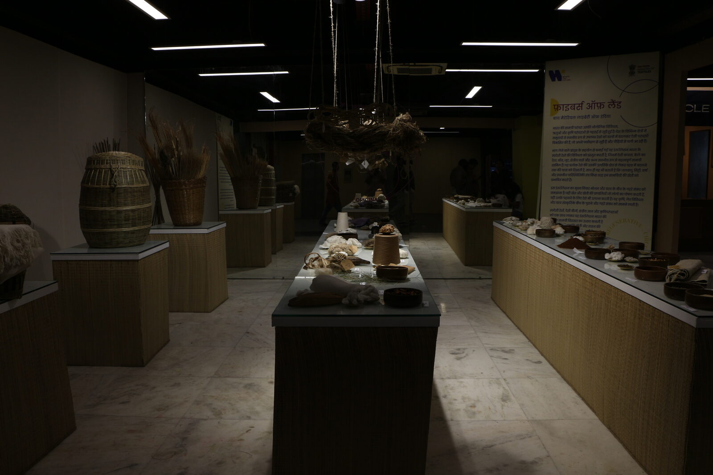
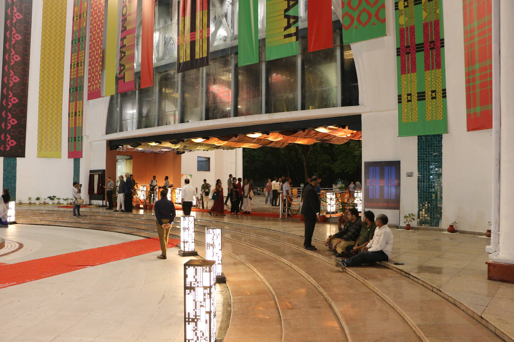

Gallery panels have no internet, so every byte of content ships embedded.
Museum technology, engineered in India
Technology you don't just see. You experience.
Interactive museums, intelligent installations and AI experiences. Six capabilities, one walk through the gallery below.
The permanent collection · RB.001 to RB.006
The engineering underneath
- 01
Interactive kiosks & touch software
Bilingual touchscreen experiences designed for standing visitors, gallery light and ten thousand taps a week.
- 02
Immersive AV & projection
Synchronised film walls, soundscapes and ambient screens that hold a room and recover on their own.
- 03
Digital archives & catalogues
Deep-dive browsing for hundreds of objects, films and oral histories, structured so a curator updates content without touching code.
- 04
AI visitor experiences
Guided journeys, adaptive interpretation and multilingual delivery powered by on-device intelligence.
- 05
3D scanning & museum replicas
Artefacts scanned, remastered and re-materialised: print-ready heritage replicas for handling collections, retail and outreach.
- 06
Install, harden & maintain
Panel installation, kiosk lockdown and honest testing: planted-failure verification, not green-light theatre.
-

Gallery corridor · Vishwakarma Gallery, Handloom Haat, Janpath — opened 14 August 2026 -

Arch corridor · Vishwakarma Gallery, Handloom Haat, Janpath — opened 14 August 2026 -

Arch installation · Vishwakarma Gallery, Handloom Haat, Janpath — opened 14 August 2026 -
Gallery entrance · Vishwakarma Gallery, Handloom Haat, Janpath — opened 14 August 2026 -

Archive station · Vishwakarma Gallery, Handloom Haat, Janpath — opened 14 August 2026 -

Opening evening · Handloom Haat, Janpath — 14 August 2026
In Numbers
The verified numbers
- 6kiosk apps
- 2languages
- 51quiz questions
- 3,000+checks in test
-
Opened
14 August 2026
On view now
Power fails without warning, so every station boots straight back into its experience.
Attendants change, so a curator can update content as data, without an engineer.
Capabilities
Six capabilities,
engineered for the floor.
All six, in detail →
-
01
Interactive kiosks & touch software
Bilingual touchscreen experiences designed for standing visitors, gallery light and ten thousand taps a week.
-
02
Immersive AV & projection
Synchronised film walls, soundscapes and ambient screens that hold a room and recover on their own.
-
03
Digital archives & catalogues
Deep-dive browsing for hundreds of objects, films and oral histories, structured so a curator updates content without touching code.
-
04
AI visitor experiences
Guided journeys, adaptive interpretation and multilingual delivery powered by on-device intelligence.
-
05
3D scanning & museum replicas
Artefacts scanned, remastered and re-materialised: print-ready heritage replicas for handling collections, retail and outreach.
-
06
Install, harden & maintain
Panel installation, kiosk lockdown and honest testing: planted-failure verification, not green-light theatre.
Case Study
Handloom Haat website & interactive galleries
- Client
- Ministry of Textiles, D.C. Handlooms
- Venue
- Vishwakarma Gallery, Handloom Haat, Janpath, New Delhi
- Opened
- 14 August 2026
- Scope
- Website development, software engineering & install
Red Banana developed the Handloom Haat website and engineered six touchscreen experiences for a national handloom exhibition. Every station runs sealed (no internet, no keyboard) with generative woven graphics rendered live from each craft tradition's real palette, in English and Hindi.
6kiosk apps
2languages
51quiz questions
3,000+checks in test
Replicas
Heritage replicas, re-materialised
- Line
- Red Banana Replicas
- First edition
- Dancing Girl, 8 cm
- Channel
- Retail & museum shops
Scan · remaster · print
Museum-grade replicas of Indian masterworks, engineered from scan to shelf in our own print studio, beginning with the Dancing Girl of Mohenjo-daro, cast at hand scale for the museum-shop counter.